Nginx安装和使用
版本：
nginx 1.10
第一节 nginx简介
1.1 nginx是什么
Nginx (engine x) 是一个高性能的HTTP和反向代理服务器，也是一个IMAP/POP3/SMTP服务器。Nginx是由伊戈尔·赛索耶夫为俄罗斯访问量第二的Rambler.ru站点（俄文：Рамблер）开发的，第一个公开版本0.1.0发布于2004年10月4日。
其将源代码以类BSD许可证的形式发布，因它的稳定性、丰富的功能集、示例配置文件和低系统资源的消耗而闻名。2011年6月1日，nginx 1.0.4发布。
Nginx是一款轻量级的Web 服务器/反向代理服务器及电子邮件（IMAP/POP3）代理服务器，并在一个BSD-like 协议下发行。其特点是占有内存少，并发能力强，事实上nginx的并发能力确实在同类型的网页服务器中表现较好，中国大陆使用nginx网站用户有：百度、京东、新浪、网易、腾讯、淘宝等
Nginx 解决了服务器的C10K（就是在一秒之内连接客户端的数目为10k即1万）问题。它的设计不像传统的服务器那样使用线程处理请求，而是一个更加高级的机制—事件驱动机制，是一种异步事件驱动结构
1.2 c10k
什么是 10K 问题？
在 1999 年，Dan Kegel 向网络服务器提出了一个骇人听闻的难题： 是时候让网络服务器去同时应对 10000 个客户端了，你觉得呢？毕竟网络已经变得很普及了。 这就是著名的 C10K 问题。 通过改善操作系统内核和从像 Apache 那样的线程服务器迁移到像 Nginx, Node 这样的事件驱动服务器，工程师们解决了这个 C10K 问题。 但现在我们面临着一个更大的挑战，如果同时应对一千万个连接呢？要解决这个难题，需要些更变革的技术
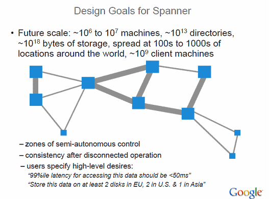
那么需要怎样才可以令一个系统管理员就可以管理一千万台服务器呢？ 谁会知道？当然是谷歌公司了。 James Hamilon说，计算服务器的数量是困难的，微软说，他们有一百万台服务器，然后，谷歌的服务器预计会达到一千万台，所以我们离单个系统管理员管理千万台服务器的日子还有些远； 但是，当这种情况发生时，下面所列就是这些系统的基础： 把数据中心当成单独一台计算机那样对待 然后，在数据中心内部，在计算机群上部署可复用的多维度多重作业，以便提高机器利用率和节约金钱 但这仅仅是一个数据中心，这并不是把你从 十 带到 百万 台服务器。对于千万台的服务器，你必须利用好这些数据中心，所以，你要建一个 Spanner 那样的可以管理百万台机器、几百个数据中心和数万亿个数据项的系统； 当然，你还需要建造一个巨型网络系统，把这些数据中心连接在一起； 最后，当你真的面临一个系统管理员管理千万台的服务器，你很可能需要付出巨大的精力去做深入的挖掘，使得之前的工作变得有意义。 在高层面来说，单个服务器同时应对千万个连接和单个系统管理员同时管理千万台机器是一样的：可扩展性就是一切。 但在低层面，他们是完全不一样的。处理千万个连接是关于扁平化处理数据，减少层面，单独自己的事情；而管理千万台服务器是关于把智能灌输到更加智慧的层面；这就很像人类身体内部万亿个个体通过自己的小系统共同协作，然后被平衡化和去中心化的大脑所处理。
1.3 nginx的特点
跨平台：可以在大多数Unix like 系统编译运行。而且也有Windows的移植版本。 配置异常简单：非常的简单，易上手。 非阻塞、高并发连接：数据复制时，磁盘I/O的第一阶段是非阻塞的。官方测试能支持5万并发连接，实际生产中能跑2~3万并发连接数（得益于Nginx采用了最新的epoll事件处理模型（消息队列）。 Nginx代理和后端Web服务器间无需长连接； Nginx接收用户请求是异步的，即先将用户请求全部接收下来，再一次性发送到后端Web服务器，极大减轻后端Web服务器的压力。 发送响应报文时，是边接收来自后端Web服务器的数据，边发送给客户端。 网络依赖性低，理论上只要能够ping通就可以实施负载均衡，而且可以有效区分内网、外网流量。 支持内置服务器检测。Nginx能够根据应用服务器处理页面返回的状态码、超时信息等检测服务器是否出现故障，并及时返回错误的请求重新提交到其它节点上。 采用Master/worker多进程工作模式 内存消耗小、成本低廉（比F5硬件负载均衡器廉价太多）、节省带宽、稳定性高等特点。
1.4 nginx基本功能
Nginx的功能包括基本HTTP功能和扩展功能。和Apache服务器一样，Nginx服务器为了提供更多的功能并且能够有效地扩展这些功能。每一个模块都提供了一个功能，通过编译这些功能模块来实现功能的扩展
a）提供静态文件和index文件，处理静态文件，索引文件以及自动索引，打开文件描述符缓存； b）使用缓存加速反向代理，反向代理加速（无缓存），简单的负载均衡和容错； c）使用缓存机制加速远程FastCGI，简单的负载均衡和容错； d）模块化的结构。过滤器包括gzipping,byte ranges,chunked responses，以及 SSI-filter。在SSI过滤器中，到同一个 proxy 或者 FastCGI 的多个子请求并发处理； e）支持SSL 和 TLS SNI 支持； f）IMAP/POP3代理服务功能； g）使用外部 HTTP 认证服务器重定向用户到 IMAP/POP3 后端； h）使用外部 HTTP 认证服务器认证用户后连接重定向到内部的 SMTP 后端；
a）基于名称和基于IP的虚拟服务器； b）支持Keep-alive和管道连接； c）灵活的配置和重新配置、在线升级的时候不用中断客户访问的处理； d）访问日志的格式，缓存日志写入和快速日志轮循； e）3xx-5xx错误代码重定向； f）速度限制
下图是Nginx的内部进程模型：
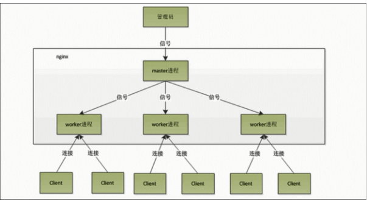
1.5 正向代理和反向代理
代理服务器一般指局域网内部的机器通过代理服务器发送请求到互联网上的服务器，代理服务器一般作用在客户端。例如：GoAgent翻墙软件。我们的客户端在进行翻墙操作的时候，我们使用的正是正向代理，通过正向代理的方式，在我们的客户端运行一个软件，将我们的HTTP请求转发到其他不同的服务器端，实现请求的分发
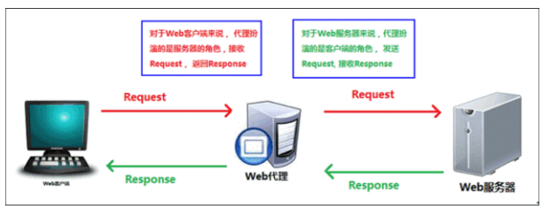
反向代理服务器作用在服务器端，它在服务器端接收客户端的请求，然后将请求分发给具体的服务器进行处理，然后再将服务器的相应结果反馈给客户端。Nginx就是一个反向代理服务器软件
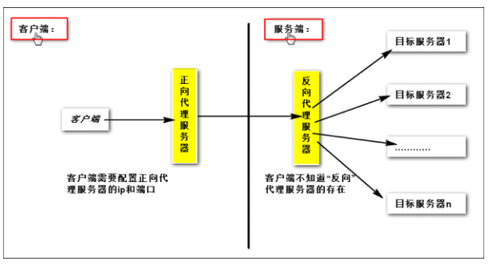
从上图可以看出：客户端必须设置正向代理服务器，当然前提是要知道正向代理服务器的IP地址，还有代理程序的端口。 反向代理正好与正向代理相反，对于客户端而言代理服务器就像是原始服务器，并且客户端不需要进行任何特别的设置。客户端向反向代理的命名空间（name-space）中的内容发送普通请求，接着反向代理将判断向何处（原始服务器）转交请求，并将获得的内容返回给客户端。
1.6 负载均衡
通过Nginx的反向代理实现负载均衡,就是通过多台服务器分压
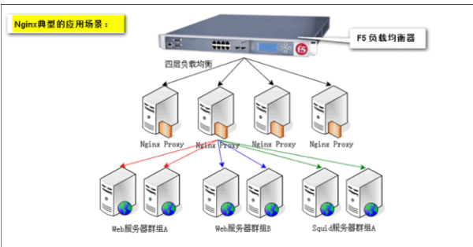
1.7 服务器的类型
1、Web服务器：提供Http的访问，例如Nginx、Apache、IIS等，虽然Tomcat也能够实现，但这并不是他的主要功能，而且性能也远不如专门的Web服务器； 2、应用程序服务器：能够用于应用程序的运行； 3、代理服务器：代理服务器通常是客户端访问的一种行为，在整个客户端访问服务器的过程中有着重要的作用； 4、反向代理 5、后台服务器 6、CDN缓存服务器：它是缓存服务器的角色，而且是反向代理的应用，在网站部署的时候，他算是一种策略，对于远距离访问的解决方案。
1.8 代理服务器
1.8.1 什么是代理服务器
代理服务器，客户机在发送请求时，不会直接发送给目的主机，而是先发送给代理服务器，代理服务接受客户机请求之后，再向主机发出，并接收目的主机返回的数据，存放在代理服务器的硬盘中，再发送给客户机。
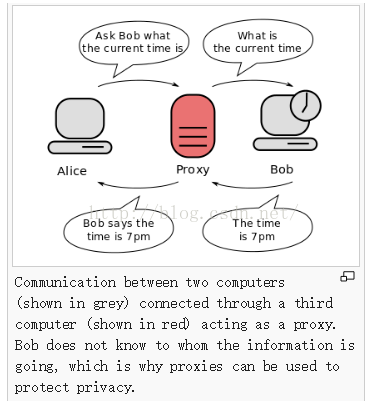
1.8.2 为什么要使用代理服务器
1）提高访问速度 由于目标主机返回的数据会存放在代理服务器的硬盘中，因此下一次客户再访问相同的站点数据时，会直接从代理服务器的硬盘中读取，起到了缓存的作用，尤其对于热门站点能明显提高请求速度
2）防火墙作用 由于所有的客户机请求都必须通过代理服务器访问远程站点，因此可在代理服务器上设限，过滤某些不安全信息。
3）通过代理服务器访问不能访问的目标站点 互联网上有许多开发的代理服务器，客户机在访问受限时，可通过不受限的代理服务器访问目标站点，通俗说，我们使用的翻墙浏览器就是利用了代理服务器，虽然不能出国，但也可直接访问外网。
第二节 nginx下载和安装
2.1 下载Nginx源文件
nginx 源文件可以直接下载,可以下在别的地方上传
进入nginx官网下载nginx的稳定版本
下载：在什么目录下执行下面的命令则下载到什么目录
cd /opt/work 切换到指定目录中 wget http://nginx.org/download/nginx-1.10.0.tar.gz 下载nginx tar -zxvf nginx-1.10.0.tar.gz 解压
2.2 安装依赖项
yum -y install gcc pcre pcre-devel zlib zlib-devel openssl openssl-devel 安装依赖项
2.3 配置Nginx安装选项
这里只配置安装到/opt/work目录下，其它选项可执行./configuration –help查看 cd /opt/work/nginx-1.10.0 跳转到解压后的目录 ./configure --prefix=/opt/work/nginx --sbin-path=/usr/bin/nginx 配置安装属性
2.4 编译并安装
make && make install
2.6 启动、停止、重启
下面可以使用 nginx 是因为在/ usr/bin 中有 nginx 指令 命令： nginx 启动nginx ps -ef | grep nginx 可通过ps -ef | grep nginx查看nginx是否已启动成功 nginx -s reload 重新启动 nginx -s stop 停止nginx

2.7 访问
启动nginx之后，直接在浏览器进行访问： http://10.211.55.12/ 如果访问不了，请检查防火墙是否放行80端口 /sbin/iptables -I INPUT -p tcp --dport 80 -j ACCEPT 将该设置添加到防火墙的规则中 /etc/rc.d/init.d/iptables save
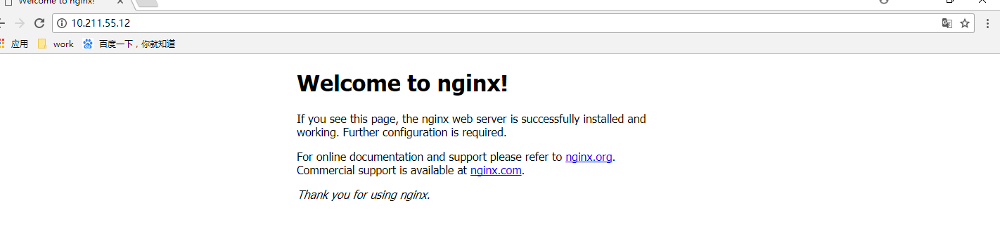
第三节 linux搭建nginx负载均衡集群
负载均衡通过 nginx 配置反向代理实现,这样我们只需要访问 nginx 即可,由 nginx 决定在内部转发到哪个服务器
此集群是采用一台Centos6.8进行设置的，这里以2个Tomcat服务器进行设置
3.1 准备2个Tomcat
新建2个目录，分别叫tomcat1、tomcat2 选择之前解压的Tomcat,复制到当前目录的 tomcat1 再次选择之前解压的Tomcat,复制到当前目录的 tomcat2
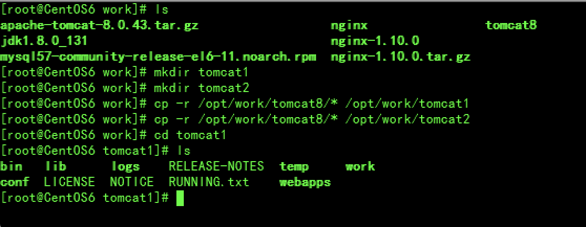
3.2 分别修改端口号
需要将tomcat1的conf/server.xml中的端口号分别进行修改 主要是8005、8080、8009 修改为8105、8180、8109 命令： vim tomcat1/conf/server.xml
需要将tomcat2的conf/server.xml中的端口号分别进行修改 主要是8005、8080、8009 修改为8205、8280、8209 命令： vim tomcat2/conf/server.xml
其实端口号可以任意只要不冲突即可
测试刚刚改变的端口号是否能用 分别启动刚刚配置的2个Tomcat,再浏览器中访问 /opt/work/tomcat1/bin/startup.sh /opt/work/tomcat2/bin/startup.sh
3.3 配置nginx的负载均衡
找到Nginx的安装目录，找到nginx.conf文件
xxxxxxxxxx#使用下面的命令编辑nginx的配置文件vim /opt/work/nginx/conf/nginx.conf#在http标签内部，配置需要进行负载均衡的N台服务器，添加：upstream server_xph{ server 10.211.55.12:8180; server 10.211.55.12:8280;}#其中 server_xph代表是别名,内部指向多台服务器#然后在server标签修改添加：#location 代表访问的路径,当前代表访问 ngnix 的根路径#proxy_pass代表转发到什么地址,后面填写 别名 就可以,它会自动从别名的服务器列表中选择一个地址进行访问location / { proxy_pass http://server_xph; } # 如果只做一台机器的反向代理,则不需要配置别名,只需要将proxy_pass 的值设置为具体的访问地址即可 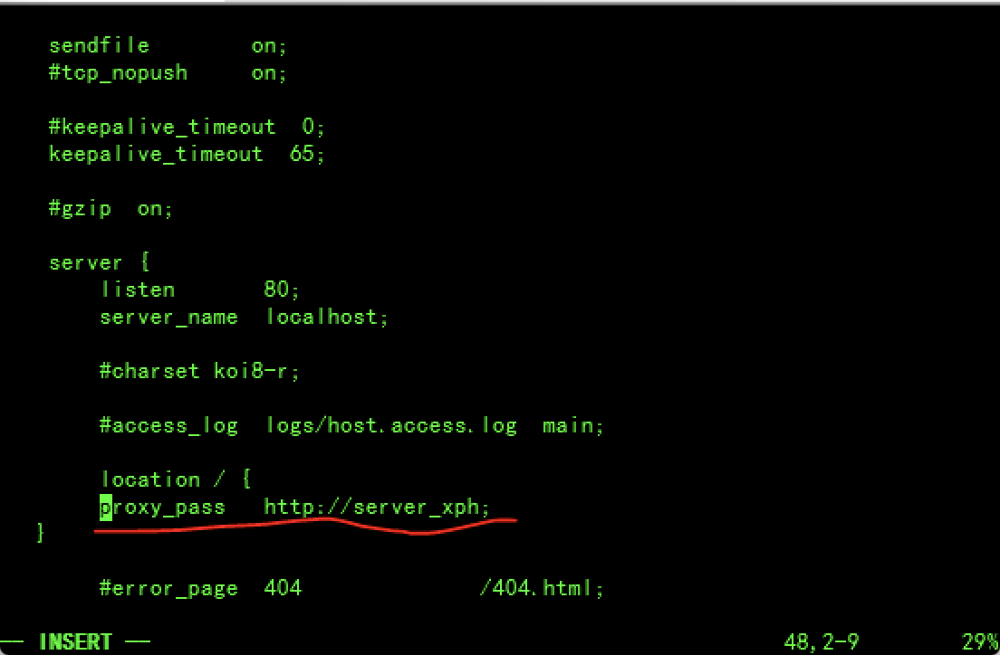
重新启动nginx即可,命令： nginx -s reload
浏览器进行访问： http://10.211.55.12/
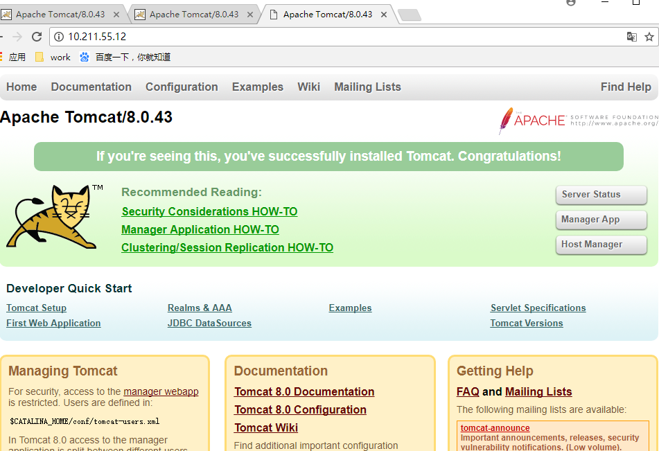
第四节 window搭建nginx集群
此集群是采用一台电脑进行设置的，这里以2个Tomcat服务器进行设置
4.1 准备2个Tomcat
将Tomcat安装目录分别拷贝到指定目录下，重命名当前的目录名为tomcat1
再次将Tomcat安装目录分别拷贝到指定目录下，重命名当前的目录名为tomcat2
4.2 分别修改端口号
需要将tomcat1的conf/server.xml中的端口号分别进行修改 主要是8005、8080、8009 修改为8105、8180、8109
需要将tomcat2的conf/server.xml中的端口号分别进行修改 主要是8005、8080、8009 修改为8205、8280、8209
其实端口号可以任意只要不冲突即可
4.3 配置nginx的负载均衡
找到Nginx的安装目录，找到nginx.conf文件
在http标签内部，配置需要进行负载均衡的N台服务器，添加：
upstream server_xph{
server 127.0.0.1:8180;
server 127.0.0.1:8280;
}
然后在server标签修改添加：
location / {
proxy_pass http://server_xph;
} 重新启动nginx即可，点击nginx.exe
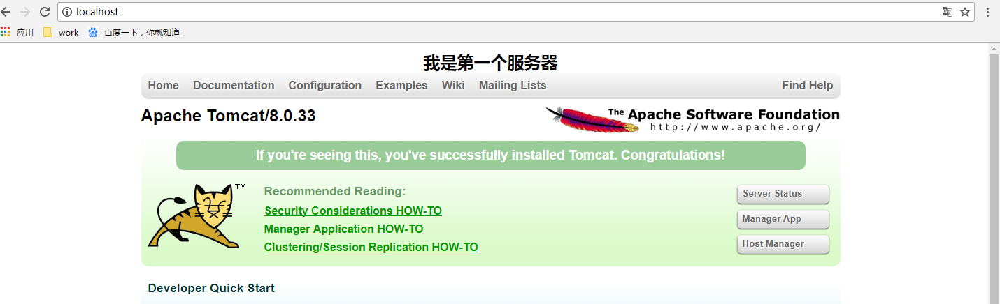

第五节 session共享问题
在进行负载均衡的时候，难免会遇到多台服务器之间的HttpSession共享的问题，常用的解决方案有一下几种：
第一种：只能在window下好使
web服务器解决(广播机制)，注意:tomcat下性能低 修改两个地方: 1.修改tomcat的server.xml 支持共享 将引擎标签下的 <Cluster className="org.apache.catalina.ha.tcp.SimpleTcpCluster"/>注释去掉 2.修改项目的配置文件 web.xml中添加一个节点 <distributable/>
第二种：使用ip_hash解决
保证一个ip地址永远的访问一台web服务器,就不存在session共享问题了,在linux 在nginx的配置文件中 upstream中添加 ip_hash;
第三种：
可以将session的id放入redis中